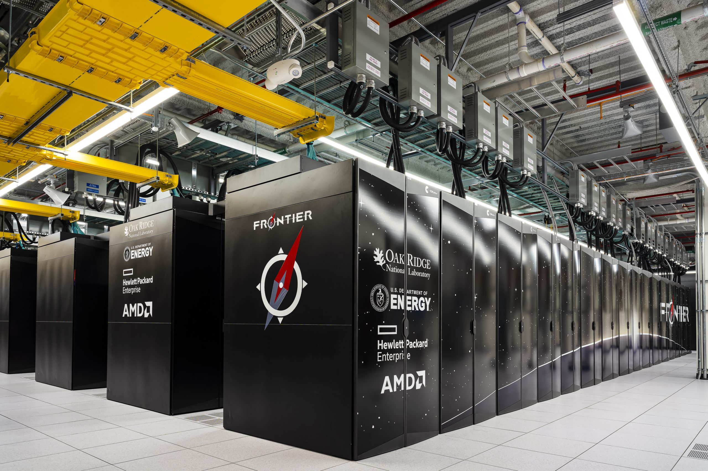

Parallel Programming
Parallel Programming
Last time we discussed parallelization over multiple cores within a single shared-memory system. Launching threads is the canonical way of parallelization.
OpenMP manages a thread pool automatically, which makes parallelizing sections of code much easier.
Distributed Computing
Parallelization over different machines on a network is often called "distributed computing".
An extreme example is the SETI@Home project, which provides a desktop application that people can download and run on their own computers. The application uses your idle CPU to do computation and report to the server, in order to help find aliens.
Distributed Computing
A more common setting is a computational cluster that is connected to the same local network.
Distributed Computing
A cluster consists of individual "nodes", each of which is basically a multi-core computer.
For example, each node on Frontier has 64 CPU cores, 512 GB of DDR4 RAM, and effectively 8 separate GPUs. These nodes are connected with a 800 Gbps network connection. Frontier has 9,408 nodes in total. The system can achieve a sustained performance of 1.2 ExaFLOP/s.
Distributed Computing
How to program for supercomputers?
Distributed Computing
The standard protocol for communication between computing nodes is the Message-Passing Interface (MPI). MPI provides a collection of functions to send and receive serialized data between nodes.
int MPI_Send(const void *buf, int count, MPI_Datatype datatype, int dest, int tag, MPI_Comm comm)
int MPI_Recv(void *buf, int count, MPI_Datatype datatype, int source, int tag,
MPI_Comm comm, MPI_Status *status)
Distributed Computing
To parallelize a simulation (e.g. fluid simulation or other PDE solver), the computational domain is often decomposed into chunks that are assigned to different MPI ranks:

Distributed Computing
Each subdomain is surrounded by ghost cells, which hold the information from the neighboring subdomain. After each update, the content of the ghost cells are updated to reflect the new values from the neighbors.
The way we implemented periodic boundary conditions in Project 2 is an example of such communication, except that we were communicating with ourselves.
Distributed Computing
Challenges to distributed computing:
- Designing algorithms that can parallelize well.
- Balancing the load among computational nodes.
- Parallelized data output and large-scale data visualization.